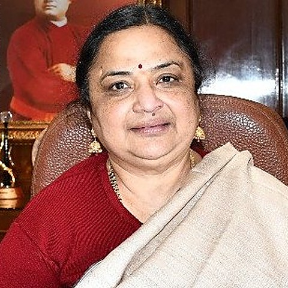
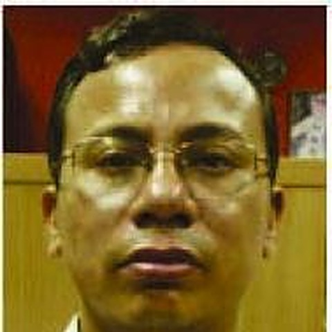
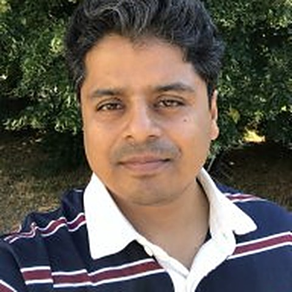

Silver Jubilee Symposium · JNU, New Delhi
25Years School of Computational & Integrative Sciences
Computational Science Across Scales
until the opening session
01 · The code of life
Twenty-five years of making science computable.
The School of Computational and Integrative Sciences began as the School of Information Technology. From that first idea it has pushed a quantitative, interdisciplinary way of looking at living and non-living systems. This symposium looks back at how the field evolved — and ahead to what comes next.
Over two days, scientists, early-career researchers, students and alumni will explore how computation, theory and experiment together deepen our understanding of life: invited lectures, student talks, posters, alumni interaction and plenty of informal conversation.
At a glance
What, when, where, who.
Computational Science Across Scales
A two-day scientific celebration of 25 years of the School of Computational and Integrative Sciences — invited lectures, student talks, poster sessions, alumni interaction and informal discussion, designed to foster exchange, mentorship and new collaborations.
Sponsored by the DBT-Bioinformatics Center, SC&IS, JNU.
Fri 27 & Sat 28 November 2026
Day 1 opens at 09:00 with registration and inaugural remarks and closes with posters and a gala dinner. Day 2 runs 09:30 – 16:30 and ends with the valedictory session and poster awards.
- 15 NovAbstract submission deadline
- 20 NovRegistration deadline
Jawaharlal Nehru University, New Delhi
- Day 1 & 2 — sessionsSAA Auditorium, JNU
Registration, talks, tea & lunch - Day 1 eveningSC&IS
Poster session & gala dinner
The people behind it



Free for SC&IS students & faculty
- SC&ISStudents & faculty — free
- ₹ 1000Non-SC&IS students
- ₹ 2000Non-SC&IS faculty / others
Programme
Two days. Seven sessions.
Choose a session — a model of the science unfolds, and the talks emerge from it.
Friday, 27 November 2026 SAA Auditorium, JNU
-
Registration, welcome & inaugural remarks SAA Auditorium, JNU
-
Session 1 Omics Science 3 talks Unfold
-
Tea / Coffee break
-
Session 2 Structural Biology and Drug Discovery 4 talks Unfold
-
Lunch SAA Auditorium, JNU
-
Session 3 Mathematical Biology and Statistical Modelling 4 talks Unfold
-
Tea / Coffee break
-
Session 4 Artificial Intelligence in Computational Biology 4 talks Unfold
-
Poster & networking session SC&IS
-
Gala dinner SC&IS · Informal reflections on the SC&IS journey
Saturday, 28 November 2026 SAA Auditorium, JNU
-
Session 5 Plant Bioinformatics 4 talks Unfold
-
Tea & informal conversations
-
Session 6 Complex Systems in Biology 4 talks Unfold
-
Lunch & conversations SAA Auditorium, JNU
-
Session 7 Molecular Biophysics and Biophysical Chemistry 4 talks Unfold
-
Valedictory session & poster awards SAA Auditorium, JNU
Contact
Questions? Write to us.
Convenor
Ragothaman Yennamalli
ragothaman@jnu.ac.inSchool of Computational and Integrative Sciences
Jawaharlal Nehru University, New Delhi 110067
Co-convenor
Arnab Bhattacharjee
arnab@jnu.ac.inSchool of Computational and Integrative Sciences
Jawaharlal Nehru University, New Delhi 110067
Join us
Be there for the next 25.
Registration is free for SC&IS students and faculty. Submit your abstract for the poster session before the deadline.
15 Nov 2026
20 Nov 2026
Free for SC&IS students & faculty · Non-SC&IS: ₹1,000 students / ₹2,000 faculty & others